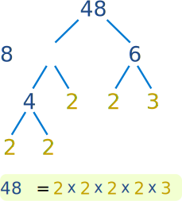

Prime Factorization
Prime Numbers
A Prime Number is:
a whole number greater than 1 that can not be made by multiplying other whole numbers
The first few prime numbers are: 2, 3, 5, 7, 11, 13, 17, 19 and 23, and we have a prime number chart if you need more.
If we can make it by multiplying other whole numbers it is a Composite Number.
Like this:

Factors
"Factors" are the numbers you multiply together to get another number:

Prime Factorization
"Prime Factorization" is finding which prime numbers multiply together to make the original number.
Here are some examples:
Example: What are the prime factors of 12 ?
It is best to start working from the smallest prime number, which is 2, so let's check:
12 ÷ 2 = 6
Yes, it divided exactly by 2. We have taken the first step!
But 6 is not a prime number, so we need to go further. Let's try 2 again:
6 ÷ 2 = 3
Yes, that worked also. And 3 is a prime number, so we have the answer:
12 = 2 × 2 × 3
As you can see, every factor is a prime number, so the answer must be right.
Note: 12 = 2 × 2 × 3 can also be written using exponents as 12 = 22 × 3
Example: What is the prime factorization of 147 ?
Can we divide 147 exactly by 2?
147 ÷ 2 = 73½
No it can't. The answer should be a whole number, and 73½ is not.
Let's try the next prime number, 3:
147 ÷ 3 = 49
That worked, now we try factoring 49.
The next prime, 5, does not work. But 7 does, so we get:
49 ÷ 7 = 7
And that is as far as we need to go, because all the factors are prime numbers.
147 = 3 × 7 × 7
(or 147 = 3 × 72 using exponents)
Example: What is the prime factorization of 17 ?
Hang on ... 17 is a Prime Number.
So that is as far as we can go.
17 = 17
Another Method
We showed you how to do the factorization by starting at the smallest prime and working upwards.
But sometimes it is easier to break a number down into any factors you can ... then work those factor down to primes.
Example: What are the prime factors of 90 ?
Break 90 into 9 × 10
- The prime factors of 9 are 3 and 3
- The prime factors of 10 are 2 and 5
So the prime factors of 90 are 3, 3, 2 and 5
Factor Tree
And a "Factor Tree" can help: find any factors of the number, then the factors of those numbers, etc, until we can't factor any more.
Example: 48

48 = 8 × 6, so we write down "8" and "6" below 48
Now we continue and factor 8 into 4 × 2
Then 4 into 2 × 2
And lastly 6 into 3 × 2
We can't factor any more, so we have found the prime factors.
Which reveals that 48 = 2 × 2 × 2 × 2 × 3
(or 48 = 24 × 3 using exponents)
Why find Prime Factors?
A prime number can only be divided by 1 or itself, so it cannot be factored any further!
Every other whole number can be broken down into prime number factors.
 |
It is like the Prime Numbers are the basic building blocks of all numbers. |
This idea can be very useful when working with big numbers, such as in Cryptography.
Cryptography
Cryptography is the study of secret codes. Prime Factorization is very important to people who try to make (or break) secret codes based on numbers.
That is because factoring very large numbers is very hard, and can take computers a long time to do.
If you want to know more, the subject is "encryption" or "cryptography".
Unique
And here is another thing:
There is only one (unique!) set of prime factors for any number.
Example: the prime factors of 330 are 2, 3, 5 and 11
330 = 2 × 3 × 5 × 11
There is no other possible set of prime numbers that can be multiplied to make 330.
In fact this idea is so important it is called the Fundamental Theorem of Arithmetic.
Prime Factorization Tool
OK, we have one more method ... use our Prime Factorization Tool that can work out the prime factors for numbers up to 4,294,967,296.